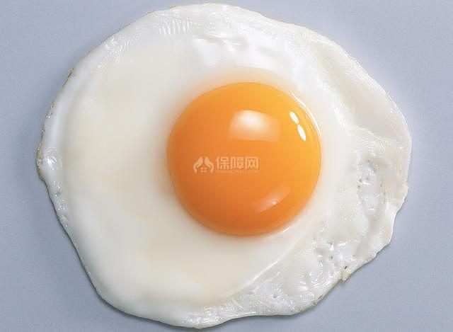
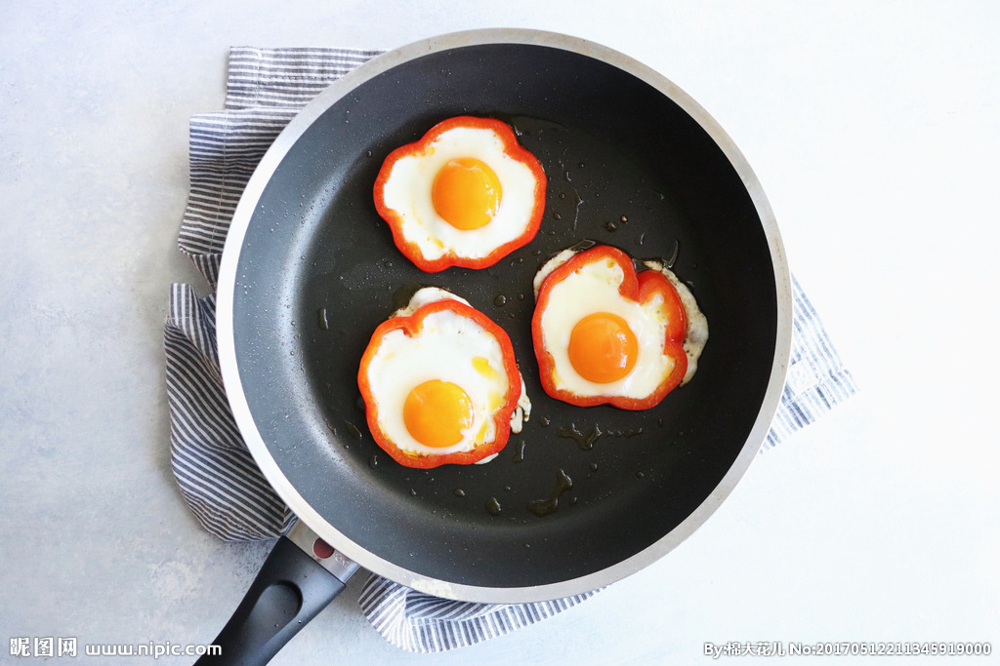

荷包蛋介紹
荷包蛋做法
先熱鍋，鍋熱後再加入橄欖油，足夠覆蓋整個鍋面的量即可。新手煎荷包蛋最怕過熟，小訣竅是從「鍋邊」打入雞蛋，並立刻轉小火，讓蛋保持在鍋邊而非中央，容易掌握熟度。
大約30秒後，可見蛋白底部凝固變白，灑上1小匙熱水，先不調味，用湯匙測出鹽巴份量。
水份燒乾後，用手均勻灑上鹽巴，就不需晃動鍋身，避免蛋黃破掉，也不會吃進滿嘴鹽。
小火續煎，觀察蛋黃周圍的透明蛋白，直到完全變白後，可隨喜好直接起鍋（太陽蛋），或翻面續煎15秒，讓蛋白包覆蛋黃後（荷包蛋）再上桌。


蔥爆牛肉介紹
薑絲炒大腸介紹
焢肉飯介紹
心得
練習 影片 音樂